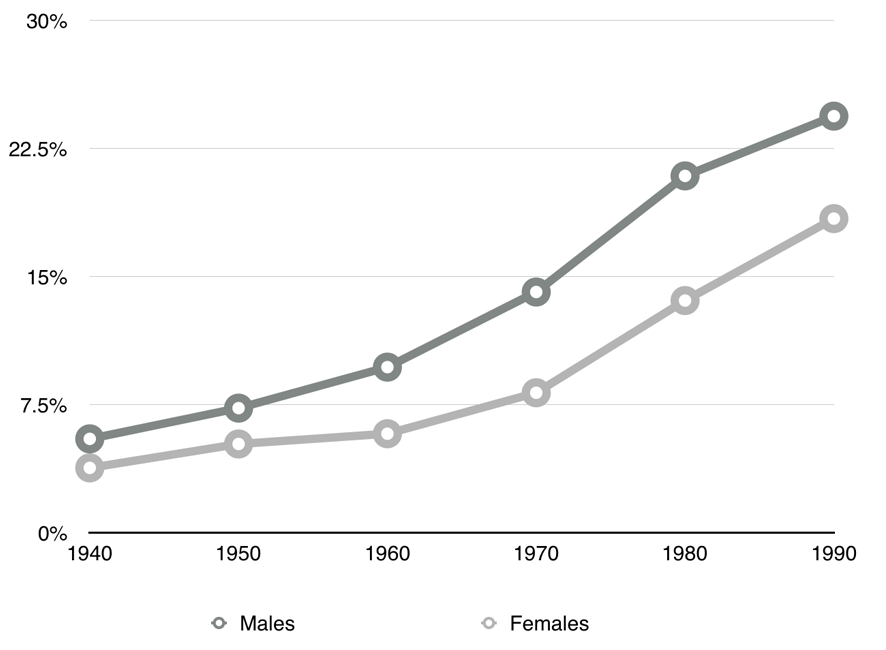
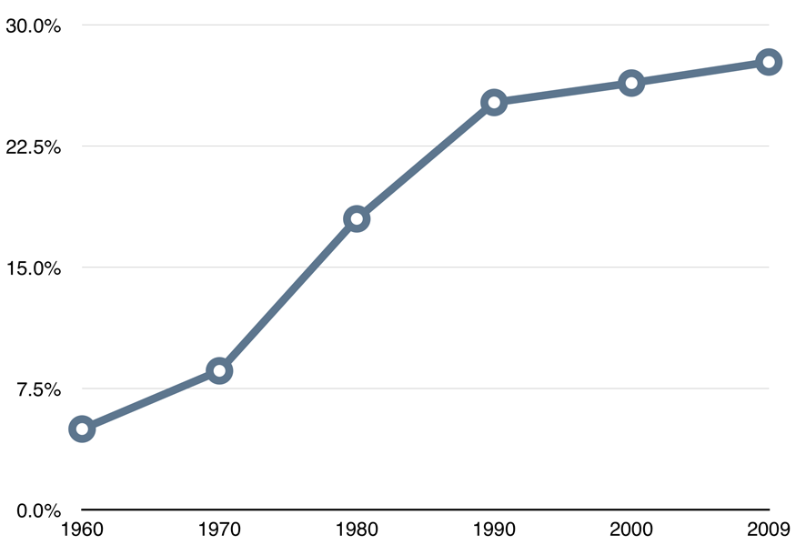

Baime began meditating when he was just six years old. He didn't learn about it from a friend, a book, or a documentary.
As he puts it, he didn't find meditation at all. Meditation found him.
"I was looking at the sky and something happened," he explained.
"I had this dramatic experience of time stopping, of falling in contact with everything. I found that I could make that feeling happen if I did certain things with my mind. Like the way I focussed on the sky, or if I walked at a certain pace."
Baime continued to experiment with his newfound ability, and read as many books on the topic as he could find. As he learned more, he realized that mindfulness might be something he could devote his whole life to.
And so he asked his parents if he could formally study mindfulness in the Buddhist tradition at the age of twelve. They were supportive, but his options were limited by geography: the suburbs of Pittsburgh in the mid-1960s weren't exactly teeming with Buddhists. Baime's family eventually found two locals willing to mentor their son, and he began his somewhat-formal exploration of mindfulness by age fourteen.
He continued to take meditation seriously throughout his teens, but wasn't sure he wanted to commit to it full-time.
By his mid-20s, Baime faced a major decision.
Should he devote his life to mindfulness in a more traditional way, and become a monk? Or should he go to medical school and embark on a path that seemed more practical and virtuous?
In a way, he chose both.
After a stint as director of a medical practice at a Philadelphia-area hospital, he started the University of Pennsylvania's Program for Mindfulness. Since its inception in 1992, the program has helped over 170,000 patients harness the power of meditation to cope with stress, trauma, and medical ailments. Today, Baime still serves as the program's director.
Since Baime is an active member of the medical community, I was particularly curious about his thoughts regarding the popularity of the term "going viral" to describe the spread of messages and ideas. When I asked him about this, he gave the kind of patient, well-thought out response one might expect from a man who has dedicated his life to mindfulness.
"Along with the meaning of viral as denoting the wide dissemination of content, it also denotes a kind of superficiality and transience to me that seems not so meaningful," Baime says. "I associate it with the fleeting and superficial quality of a lot of our communication now. Books, big ideas, things that matter deeply... they don't tend to go viral. They actually require a subtle and complex narrative."
To Baime, the concept of something "going viral" is the antithesis of everything mindfulness stands for. Mindfulness is pro-thoughtfulness, pro-deep thinking. To him, the viral analogy is superficial and shallow.
There's another problem with the idea that mindfulness spreads like a virus.
While person-to-person communication helped mindfulness spread across the U.S. faster than it may have otherwise, it only explains part of the phenomenom.
Meditation spread through mainstream American culture because the right things happened at the right time. The story of meditation's westward journey includes decisions made by military leaders, lawyers, church leaders, and even the directors of the higher education system.
Jeff Wilson, professor of religious studies at the University of Waterloo, traced the spread of mainstream attention toward meditation in his book Mindful America. He began his investigation with U.S. politicians.
In 1965, Congress passed the Higher Education Act and the G.I. bill for veterans, both of which made it easier for more Americans to go to college.
Here's college attendance over that time, broken down by gender and race. While college attendance was on the rise from the beginning of this study, the pace clearly picks up starting around 1960. (Source.)

Around the same time, many schools added religious studies departments to their colleges, many of which taught the tenets of Buddhism. Then, Congress repealed a range of restrictive immigration laws, which boosted immigration of people from Asian countries.
Here's a graph showing the growth of U.S. immigration from Asian countries (as a percentage of total immigration). (Source.)

The repeal of these laws created an environment in which it was more likely that everyday Americans might meet people familiar with Buddhism.
As we've seen, mindfulness didn't spread to the U.S. solely via person-to-person communication. It spread thanks to the random alignment of forces that made it more likely to catch on. Immigration, academia, and an increasing familiarity with concepts of psychology and American military and political involvement in Southeast Asia combined to create the cultural awareness needed to make mindfulness go mainstream.
The viral analogy misses another important part of the story: the role of individual advocates (like Dr. Baime), and the power of the media to help those individuals reach a wider audience.
The real viral power.
Without the work of several prominent advocates, mindfulness probably would've remained a fringe interest of a few medical professionals and countercultural devotees. One such early influencer was Thich Nhat Hanh, whom Fred Wilson calls "one of the [...] true celebrity Buddhists in the west," noting that Thich has been interviewed by Oprah Winfrey multiple times. Hanh used TV and books to broadcast his message to many people simultaneously.
Jon Kabat-Zinn is another individual who helped popularize meditation in the U.S. He was one of the first to report an empirical link between mindfulness and stress reduction. His work helped legitimize mindfulness and popularized the idea that it can have a measurable impact on health.
Michael Baime agrees that Kabat-Zinn was an influential person in the mindfulness community.
"He got lucky," Baime says, "because his work was featured in Bill Moyers' 1993 PBS special that became very popular. There was a lot of real interest in meditation right after that. That was the beginning of interest that provoked research."
Thus, Kabat-Zinn helped usher in a new way to understand mindfulness which continues to the present day. Mindfulness is no longer an activity for the cultural fringes. It's widely acknowledged as a way to reduce stress, recover from illness, and improve overall health. But Kabat-Zinn didn't create a movement by himself. He relied on television, the publishing industry, and other prominent mindfulness advocates.
The role of influential individuals like Kabat-Zinn and the books, TV shows, and talk-show appearances that helped catapult them to fame underscores the limitations of the viral analogy. Most messages and ideas spread thanks to a combination of person-to-person communication and broadcast channels, in which messages are disseminated by one person (or organization) to many others.
The viral analogy lacks the nuance we need to account for the wide range of distinct elements that came together to prime the U.S. citizenry for an interest in meditation and mindfulness. But when we think of ideas as spreading like elements of an ecosystem, we can better understand the real ways in which ideas spread.
In an ecosystem, independent forces come together to change the environment in a spontaneous, uncontrollable manner. Every part affects the other part. Heavy rainfall causes flooding, which causes animals to migrate, which gives way to new winners and losers in the food chain. A similar conceptual chain enabled mindfulness to spread across the west. Immigration, education, and other cultural forces created the environment mindfulness needed to thrive.
The person-to-person model of the spread of ideas sacrifices nuance and detail in favor of simplicity. But when you simplify a process too much, as I believe many internet-era thinkers have, it loses its practical applicability and fools us into believing ideas and messages can succeed without the help of a range of other channels and prominent influencers.
To learn more about how ideas really spread, read the other installments in this series.


Help this site go viral: